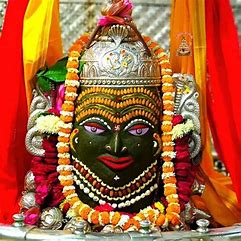

Travelling Gallery

Kedarnath Temple

Mahabodhi Temple

Your trip is Easy with us
$800
This is very beautfull place for attractive for more visiter around the world Kedarnath temple is a holy shrine dedicated to Lord Shiva and one of the 12 jyotirlingas in India1. It is said to have been built by the Pandavas of Mahabharata after their war, as a way of seeking forgiveness from Shiva12. The present temple was established by Adi Sankaracharya in the 8th century AD12, who restored the glory of the ancient shrine.
$98
This is very beautfull place The Mahabodhi Temple (literally: "Great Awakening Temple") or the Mahābodhi Mahāvihāra, a UNESCO World Heritage Site, is an ancient, but rebuilt and restored Buddhist temple in Bodh Gaya, Bihar, India, marking the location where the Buddha is said to have attained enlightenment. The site contains a descendant of the Bodhi Tree under which the Buddha gained enlightenment, and has been a major pilgrimage destination of Buddhists for over two thousand years.
$400
This is very beautfull place Mahakaleshwar Jyotirlinga is a Hindu temple dedicated to Shiva and is one of the twelve Jyotirlingas, shrines which are said to be the most sacred abodes of Shiva. It is located in the ancient city of Ujjain in the state of Madhya Pradesh, India. The temple is situated on the side of the holy river Shipra.
Kedarnath temple is a holy shrine dedicated to Lord Shiva and one of the 12 jyotirlingas in India1. It is said to have been built by the Pandavas of Mahabharata after their war, as a way of seeking forgiveness from Shiva12. The present temple was established by Adi Sankaracharya in the 8th century AD12, who restored the glory of the ancient shrine.
The Mahabodhi Temple (literally: "Great Awakening Temple") or the Mahābodhi Mahāvihāra, a UNESCO World Heritage Site, is an ancient, but rebuilt and restored Buddhist temple in Bodh Gaya, Bihar, India, marking the location where the Buddha is said to have attained enlightenment. The site contains a descendant of the Bodhi Tree under which the Buddha gained enlightenment, and has been a major pilgrimage destination of Buddhists for over two thousand years.
Mahakaleshwar Jyotirlinga is a Hindu temple dedicated to Shiva and is one of the twelve Jyotirlingas, shrines which are said to be the most sacred abodes of Shiva. It is located in the ancient city of Ujjain in the state of Madhya Pradesh,